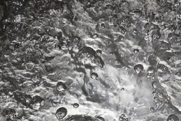

|

|
|
Abstract:
A sharp interface capturing approach is presented for two-phase flow simulations
with phase change. The Gradient Augmented Level Set (GALS) method is coupled
with the two-phase momentum and energy conservation equations to advect the
liquid-gas interface and predict heat transfer with phase change. The Ghost
Fluid Method (GFM) is adopted to discretize the advection and diffusion terms
for velocity in computational cells located in the interfacial region.
Furthermore, the GFM is also employed to treat the discontinuity in the stress
tensor, velocity, and temperature gradient across the interface yielding a more
accurate treatment in handling interfacial jump conditions. Thermal convection
and diffusion terms are approximated by explicitly identifying the interface
location, resulting in a sharp treatment for the energy solution. This sharp
treatment is extended in estimating the interfacial mass transfer rate. At the
computational cell, an n-cubic Hermite interpolation scheme is employed to
describe the interface location, which is locally fourth-order accurate. This
extent of subgrid level description provides an accurate methodology for
treating the various interfacial processes with a high degree of sharpness. The
ability to predict the interface and temperature evolutions accurately is
illustrated by comparing numerical results with existing 1D to 3D analytical
solutions.
|

![[PHOTO]](../../images/knight_small.png)